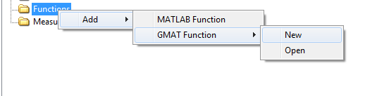
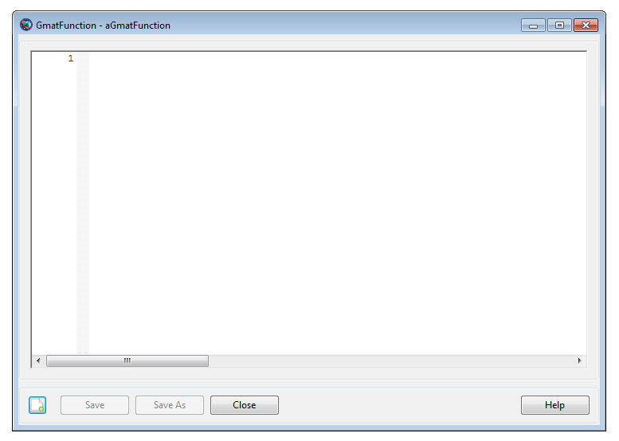

GMATFunction — Declaration of a GMAT function
The GmatFunction resource declares a new GMAT function or can be used to load-in a pre-existing GMAT function. This function can be called in the Mission Sequence through GMAT's CallGmatFunction command. See the CallGmatFunction reference for details.
Through this GMAT function, data can be passed in the function as input and received as output. Data that is passed into the function as input or received from the function as output can also be declared as global. See the Global reference for more details. See also the Remarks and Examples sections for detailed discussion on GMAT functions and how to use them.
See Also: CallGmatFunction, Global
| Field | Description | ||||||||||||
|---|---|---|---|---|---|---|---|---|---|---|---|---|---|
| FunctionPath | Allows the user to define a valid function path. In
the GUI, the FunctionPath field is activated
after editing the function and then clicking on the function's
|
In the GUI, a new GmatFunction resource is created as follows:
In the Resources Tree, right click on the Functions folder, select Add -> GMAT Function -> New
In the New GMAT function dialog box, type the desired name of your function.
|  |
The GmatFunction resource's GUI window is very
simple. When a new GMAT function is created through the GUI, the
FunctionPath field is defined by first editing the
function and then clicking on the Save As button. This
lets you graphically define the path.
|  |
Arguments can be passed into a GMAT function as input and returned from a GMAT function as output. You can pass GMAT objects as input to a function and receive entire objects as output from the function. If a given GMAT object is not declared as global in both the main script and in the function, then all objects that are passed into or received as output from the function are considered to be local to that function and the main script.
In GMAT, you can use CallGmatFunction command to pass GMAT objects as input arguments and receive objects as output from the function. In general, any objects in GMAT's Resources tree can be passed as input to the function. Most common objects that a user is likely to pass as input to the function are objects that are related to propagating a spacecraft, performing differential correction (DC) in a targeter, implementing optimization in an optimizer loop, user-defined variables/arrays/strings or subscribers that are used to draw or report parameters. Most common objects that are likely to be passed as output arguments from the function maybe a Spacecraft resource or user-defined objects such as Variables, Arrays or Strings.
Below is a list of allowed objects that can be passed as input and output to and from the function. Also see Examples section that show two distinct methods in two separate examples of how to pass local objects as inputs to the function, perform an operation inside the function, then receive local objects as outputs from the function.
The input arguments can be any of the following types:
Any resource objects (e.g. Spacecraft, Propagator, DC, Optimizers, Impulsive or FiniteBurns)
resource parameter of real number type (e.g.
Spacecraft.X)
resource parameter of string type (e.g.
Spacecraft.UTCGregorian)
Array, String, or Variable resource
The output arguments can be any of the following types:
Resource object like Spacecraft
resource parameter of real number type (e.g.
Spacecraft.X)
resource parameter of string type (e.g.
Spacecraft.UTCGregorian)
Array, String, or Variable resource
In GMAT, objects can be declared as global by using the Global command in the Mission tree. All default objects present in GMAT's Resources tree or any new user-defined resources can be declared as global. Currently any default or new user-defined coordinate systems, SolarSystemBarycenter, SolarSystem, default or new user-defined propagators are automatic global objects and not needed to be specifically declared as global via the Global command.
Often times, there will be cases when you will propagate a spacecraft both in the main script and from inside the GMAT function. Additionally users may want to report and/or plot spacecraft's trajectory, parameters, variables, arrays and strings to same subscribers both from the main script and/or solely from inside the function. If you want to report and plot continuous set of data to any of the five subscribers (i.e. OrbitView, GroundTrackPlot, XYPlot, ReportFile, EphemerisFile), then always declare your Spacecraft object and subscriber objects as global both in the main script and inside the function. Abiding by this rule draws plots, reports and ephemeris files correctly and flow of data will be reported continuously to all the subscribers.
In general, a good scripting practice is that objects that have been declared global don't need to be sent as input or output arguments to and from the function. For example, if Spacecraft, all subscriber objects or objects that are used to perform propagation, targeting or optimization have already been declared global, then you don't to be redundant and send those global objects again as input or receive them as output from the function. Having said that, GMAT does allow globally declared objects such as Spacecraft, global variables/arrays/strings to be passed as input/output argument to and from the function. Globally declared objects such as spacecraft, variables/arrays/strings can be plotted or reported interchangeably both from the main script and inside the function to globally declared subscribers.
See Examples section that shows three examples of how to declare spacecraft, all five subscribers and variables/arrays as global in both the main script and inside the function. As you run the examples, notice that the flow of data reported to all five subscribers is continuous.
GMAT allows you to use simple GMAT functions in the main script in an assignment command mode. Below example snippet shows how to use simple GMAT functions in mathematical statements. Note that in the below snippet, function path to GMAT function's FunctionPath field was not specifically defined. Whenever the FunctionPath field is not defined in the script mode, then preferred default path of these functions is in the following directory where GMAT was installed: ..GMAT\userfunctions\gmat\
%%Using a GMAT function in a mathematical statement
Create ReportFile rf
Create GmatFunction Math_GmatPi Math_GmatSin
Create GmatFunction Math_GmatAtan2 Math_GmatInv
Create Variable x y z pi in
Create Array A[2,2] B[2,2]
BeginMissionSequence
A(1,1) = 1
A(1,2) = 3
A(2,1) = 4
A(2,2) = 2
% no inputs into the function
pi = Math_GmatPi * 2
Report rf pi
% one input into the function
[pi] = Math_GmatPi
in = pi/4
x = Math_GmatSin(in) - 15
Report rf x
% two inputs:
in = 0.5
y = Math_GmatAtan2(in, x)^2
Report rf y
% array input/output:
B = Math_GmatInv(A)'
Report rf B
%%%% Math_GmatPi Function begins below:
function [pi] = Math_GmatPi
Create Variable pi
BeginMissionSequence
pi = acos(-1)
%%%% Math_GmatSin Function begins below:
function [y] = Math_GmatSin(x)
Create Variable y
BeginMissionSequence
y = sin(x)
%%%% Math_GmatAtan2 Function begins below:
function [z] = Math_GmatAtan2(y, x)
Create Variable z
BeginMissionSequence
z = atan2(y, x)
%%%% Math_GmatInv Function begins below:
function [B] = Math_GmatInv(A)
Create Array B[2,2]
BeginMissionSequence
B = inv(A)Method 1 of how to pass local objects into the function and receiving local objects as the output from the function. Pass local spacecraft, other local objects into the function, perform hohmann targeting inside the function, receive updated local spacecraft, local variables as output and finally report them to local subscribers in the main script. Since the spacecraft and all five subscribers were only local objects (i.e. not declared as global), hence notice that all subscribers begin to draw and report data once the updated spacecraft is returned back and propagated in the main script.
Create Spacecraft aSat
Create ForceModel aFM
aFM.CentralBody = Earth
aFM.PointMasses = {Earth}
Create Propagator aProp
aProp.FM = aFM
Create ImpulsiveBurn TOI
Create ImpulsiveBurn GOI
Create DifferentialCorrector DC
Create OrbitView anOrbitView
anOrbitView.SolverIterations = Current
anOrbitView.Add = {aSat, Earth}
Create GroundTrackPlot GroundTrackPlot1
GroundTrackPlot1.Add = {aSat}
GroundTrackPlot1.CentralBody = Earth
Create XYPlot XYPlot1
XYPlot1.XVariable = aSat.ElapsedDays
XYPlot1.YVariables = {aSat.EarthMJ2000Eq.X}
Create ReportFile rf
rf.Add = {aSat.UTCGregorian, aSat.EarthMJ2000Eq.X, ...
aSat.EarthMJ2000Eq.Y, aSat.EarthMJ2000Eq.Z, ...
aSat.EarthMJ2000Eq.VX, aSat.EarthMJ2000Eq.VY, aSat.EarthMJ2000Eq.VZ}
Create ReportFile rf2
rf2.WriteHeaders = false
Create EphemerisFile anEphemerisFile
GMAT anEphemerisFile.Spacecraft = aSat
Create GmatFunction Targeter_Inside_Function
Targeter_Inside_Function.FunctionPath = ...
'C:\Users\rqureshi\Desktop\Targeter_Inside_Function.gmf'
Create Variable DV1 DV2
BeginMissionSequence;
% Pass local S/C, local objects into function and receive back
% updated local S/C and local variables:
'Hohmann Transfer'[DV1, DV2, aSat] ...
= Targeter_Inside_Function(aSat, aProp, TOI, GOI, DC)
TOI.Element1 = DV1
GOI.Element1 = DV2
% Report updated S/C:
Report rf2 aSat.UTCModJulian aSat.UTCGregorian aSat.X aSat.Y aSat.Z ...
aSat.VX aSat.VY aSat.VZ TOI.Element1 GOI.Element1
Propagate 'Prop one day' aProp(aSat) {aSat.ElapsedDays = 1.0}
Report rf2 aSat.UTCModJulian aSat.UTCGregorian aSat.X aSat.Y aSat.Z ...
aSat.VX aSat.VY aSat.VZ
%%%%%%%%%%% Function begins below:
function [dv1, dv2, aSat] = Targeter_Inside_Function(aSat, aProp, TOI, GOI, DC)
% Create local S/C, local variables:
Create Spacecraft aSat
Create Variable dv1 dv2
BeginMissionSequence
Propagate 'Propagate to Periapsis' aProp(aSat) {aSat.Earth.Periapsis}
Target 'Hohmann Transfer' DC {SolveMode = Solve, ExitMode = SaveAndContinue}
Vary 'Vary TOI' DC(TOI.Element1 = 1.0, {Perturbation = 0.0001, ...
Lower = 0.0, Upper = 3.14159, MaxStep = 0.5})
Maneuver 'Perform TOI' TOI(aSat)
Propagate 'Prop to Apoapsis' aProp(aSat) {aSat.Earth.Apoapsis}
Achieve 'Achieve RMAG = 42165' DC(aSat.Earth.RMAG = 42165)
Vary 'Vary GOI' DC(GOI.Element1 = 1.0, {Perturbation = 0.0001, ...
Lower = 0.0, Upper = 3.14159, MaxStep = 0.2})
Maneuver 'Perform GOI' GOI(aSat)
Achieve 'Achieve ECC = 0.005' DC(aSat.Earth.ECC = 0.005)
EndTarget
dv1 = TOI.Element1
dv2 = GOI.Element1
Method 2 of how to pass local objects into the function and receiving local objects as the output from the function. In this method, notice that we now only pass local spacecraft as input to the function. Instead of passing additional local objects into the function, we now create those required local objects inside the function itself. Similar to method 1, we perform hohmann targeting inside the function, then send updated spacecraft and variables back to the main script as output from the function. Finally updated spacecraft is propagated for one day in main script and reported by all subscribers. Since the spacecraft and all five subscribers were only local objects (i.e. not declared as global), hence notice that all subscribers begin to draw and report data once the updated spacecraft begins propagation in the main script.
Create Spacecraft aSat
Create ForceModel aFM
aFM.CentralBody = Earth
aFM.PointMasses = {Earth}
Create Propagator aProp
aProp.FM = aFM
Create ImpulsiveBurn TOI
Create ImpulsiveBurn GOI
Create DifferentialCorrector DC
Create OrbitView anOrbitView
anOrbitView.SolverIterations = Current
anOrbitView.Add = {aSat, Earth}
Create GroundTrackPlot GroundTrackPlot1
GroundTrackPlot1.Add = {aSat}
GroundTrackPlot1.CentralBody = Earth
Create XYPlot XYPlot1
XYPlot1.XVariable = aSat.ElapsedDays
XYPlot1.YVariables = {aSat.EarthMJ2000Eq.X}
Create ReportFile rf
rf.Add = {aSat.UTCGregorian, aSat.EarthMJ2000Eq.X, ...
aSat.EarthMJ2000Eq.Y, aSat.EarthMJ2000Eq.Z, ...
aSat.EarthMJ2000Eq.VX, aSat.EarthMJ2000Eq.VY, aSat.EarthMJ2000Eq.VZ}
Create ReportFile rf2
rf2.WriteHeaders = false
Create EphemerisFile anEphemerisFile
GMAT anEphemerisFile.Spacecraft = aSat
Create GmatFunction Targeter_Inside_Function
Targeter_Inside_Function.FunctionPath = ...
'C:\Users\rqureshi\Desktop\Targeter_Inside_Function.gmf'
Create Variable DV1 DV2
BeginMissionSequence;
% Pass only local S/C into the function and receive back
% updated local S/C and local variables:
'Hohmann Transfer'[DV1, DV2, aSat] ...
= Targeter_Inside_Function(aSat)
TOI.Element1 = DV1
GOI.Element1 = DV2
% Report updated S/C:
Report rf2 aSat.UTCModJulian aSat.UTCGregorian aSat.X aSat.Y aSat.Z ...
aSat.VX aSat.VY aSat.VZ TOI.Element1 GOI.Element1
Propagate 'Prop one day' aProp(aSat) {aSat.ElapsedDays = 1.0}
Report rf2 aSat.UTCModJulian aSat.UTCGregorian aSat.X aSat.Y aSat.Z ...
aSat.VX aSat.VY aSat.VZ
%%%%%%%%%%% Function begins below:
function [dv1, dv2, aSat] = Targeter_Inside_Function(aSat)
% Create local S/C:
Create Spacecraft aSat
% Create local objects that are used to do targeting:
Create ForceModel aFM
aFM.CentralBody = Earth
aFM.PointMasses = {Earth}
Create Propagator aProp
aProp.FM = aFM
Create ImpulsiveBurn TOI
Create ImpulsiveBurn GOI
Create DifferentialCorrector DC
% Create local variables:
Create Variable dv1 dv2
BeginMissionSequence
Propagate 'Propagate to Periapsis' aProp(aSat) {aSat.Earth.Periapsis}
Target 'Hohmann Transfer' DC {SolveMode = Solve, ExitMode = SaveAndContinue}
Vary 'Vary TOI' DC(TOI.Element1 = 1.0, {Perturbation = 0.0001, ...
Lower = 0.0, Upper = 3.14159, MaxStep = 0.5})
Maneuver 'Perform TOI' TOI(aSat)
Propagate 'Prop to Apoapsis' aProp(aSat) {aSat.Earth.Apoapsis}
Achieve 'Achieve RMAG = 42165' DC(aSat.Earth.RMAG = 42165)
Vary 'Vary GOI' DC(GOI.Element1 = 1.0, {Perturbation = 0.0001, ...
Lower = 0.0, Upper = 3.14159, MaxStep = 0.2})
Maneuver 'Perform GOI' GOI(aSat)
Achieve 'Achieve ECC = 0.005' DC(aSat.Earth.ECC = 0.005)
EndTarget
dv1 = TOI.Element1
dv2 = GOI.Element1
In this example, we declare spacecraft, all subscribers and other objects as global in both main script and in function. Propagate inside the function, perform targeting inside function, and report local variables, global spacecraft state and global variable (DV1, DV2) to global reportfile. Next, we continue to propagate in the main script and continue to report spacecraft state to global reportfile in the main script. After running this example, pay special attention to all subscribers. Note that spacecraft trajectory is plotted continuously on three plotting subscribers and data is reported continuously as well to both reportfiles and ephemerisfile.
Create Spacecraft aSat
Create ForceModel aFM
aFM.CentralBody = Earth
aFM.PointMasses = {Earth}
Create Propagator aProp
aProp.FM = aFM
Create ImpulsiveBurn TOI
Create ImpulsiveBurn GOI
Create DifferentialCorrector DC
Create OrbitView anOrbitView
anOrbitView.SolverIterations = Current
anOrbitView.Add = {aSat, Earth}
Create GroundTrackPlot GroundTrackPlot1
GroundTrackPlot1.Add = {aSat}
GroundTrackPlot1.CentralBody = Earth
Create XYPlot XYPlot1
XYPlot1.XVariable = aSat.ElapsedDays
XYPlot1.YVariables = {aSat.EarthMJ2000Eq.X}
Create ReportFile rf
rf.Add = {aSat.UTCGregorian, aSat.EarthMJ2000Eq.X, ...
aSat.EarthMJ2000Eq.Y, aSat.EarthMJ2000Eq.Z, ...
aSat.EarthMJ2000Eq.VX, aSat.EarthMJ2000Eq.VY, aSat.EarthMJ2000Eq.VZ}
Create ReportFile rf2
rf2.WriteHeaders = false
Create EphemerisFile anEphemerisFile
GMAT anEphemerisFile.Spacecraft = aSat
Create GmatFunction Global_Subscribers
Global_Subscribers.FunctionPath = ...
'C:\Users\rqureshi\Desktop\Global_Subscribers.gmf'
Create Variable DV1 DV2
BeginMissionSequence;
% Declare aSat, Subscribers and other objects as Global:
Global aSat
Global aFM TOI GOI DC %aProp is global by default.
Global anOrbitView GroundTrackPlot1 XYPlot1 rf rf2 anEphemerisFile
Global DV1 DV2
Report rf2 aSat.UTCGregorian aSat.UTCModJulian aSat.X aSat.Y aSat.Z ...
aSat.VX aSat.VY aSat.VZ
% Call function:
Global_Subscribers()
% Report updated Global S/C, TOI and GOI:
Report rf2 aSat.UTCGregorian aSat.UTCModJulian aSat.X aSat.Y aSat.Z ...
aSat.VX aSat.VY aSat.VZ TOI.Element1 GOI.Element1
Propagate 'Prop one more day' aProp(aSat) {aSat.ElapsedDays = 1.0}
Report rf2 aSat.UTCGregorian aSat.UTCModJulian aSat.X aSat.Y aSat.Z ...
aSat.VX aSat.VY aSat.VZ
% Report Global DV1 and DV2 to global 'rf2' in main script:
Report rf2 DV1 DV2
%%%%%%%%%%% Function begins below:
function Global_Subscribers()
% Create Local variables, string:
Create Variable sc_epoch x y z vx vy vz dv1 dv2;
Create String utc_epoch
Global aSat
Global aFM TOI GOI DC
Global anOrbitView GroundTrackPlot1 XYPlot1 rf rf2 anEphemerisFile
Global DV1 DV2
BeginMissionSequence
Propagate 'Propagate to Periapsis' aProp(aSat) {aSat.Earth.Periapsis}
Target 'Hohmann Transfer' DC {SolveMode = Solve, ExitMode = SaveAndContinue}
Vary 'Vary TOI' DC(TOI.Element1 = 1.0, {Perturbation = 0.0001, ...
Lower = 0.0, Upper = 3.14159, MaxStep = 0.5})
Maneuver 'Perform TOI' TOI(aSat)
Propagate 'Prop to Apoapsis' aProp(aSat) {aSat.Earth.Apoapsis}
Achieve 'Achieve RMAG = 42165' DC(aSat.Earth.RMAG = 42165)
Vary 'Vary GOI' DC(GOI.Element1 = 1.0, {Perturbation = 0.0001, ...
Lower = 0.0, Upper = 3.14159, MaxStep = 0.2})
Maneuver 'Perform GOI' GOI(aSat)
Achieve 'Achieve ECC = 0.005' DC(aSat.Earth.ECC = 0.005)
EndTarget
sc_epoch = aSat.UTCModJulian
utc_epoch = aSat.UTCGregorian
x = aSat.X
y = aSat.Y
z = aSat.Z
vx = aSat.VX
vy = aSat.VY
vz = aSat.VZ
dv1 = TOI.Element1
dv2 = GOI.Element1
% Report local variables/strings to Global reportfile 'rf2':
Report rf2 utc_epoch sc_epoch x y z vx vy vz dv1 dv2
Propagate 'Prop one Day Inside Function' aProp(aSat) {aSat.ElapsedDays = 1.0}
% Report Global aSat state to global 'rf2':
Report rf2 aSat.UTCGregorian aSat.UTCModJulian aSat.X aSat.Y aSat.Z aSat.VX ...
aSat.VY aSat.VZ TOI.Element1 GOI.Element1
% Report Global variables DV1 and DV2 to global 'rf2' in main script:
DV1 = TOI.Element1
DV2 = TOI.Element1
Just as previous example, we declare spacecraft, all subscribers and other objects as global in both main script and in function. This time GMAT function is nested inside control logic statements like While and If-EndIf. LEO station-keeping is performed inside the function. As the example will be running, pay special attention to all subscribers. Note that spacecraft trajectory is plotted continuously on three plotting subscribers and data is reported continuously as well to both reportfiles and ephemerisfile.
Create Spacecraft LEOsat
LEOsat.DisplayStateType = Keplerian
LEOsat.SMA = 6733.989999999996
LEOsat.ECC = 0.0004329999999984123
LEOsat.INC = 34.98399999999998
LEOsat.RAAN = 274.742
LEOsat.AOP = 287.8049999999732
LEOsat.TA = 294.0690000000269
Create ForceModel LEOprop_ForceModel
LEOprop_ForceModel.CentralBody = Earth
LEOprop_ForceModel.PrimaryBodies = {Earth}
LEOprop_ForceModel.PointMasses = {Luna, Sun}
LEOprop_ForceModel.SRP = On
LEOprop_ForceModel.GravityField.Earth.Degree = 4
LEOprop_ForceModel.GravityField.Earth.Order = 4
LEOprop_ForceModel.GravityField.Earth.PotentialFile = 'JGM2.cof'
LEOprop_ForceModel.Drag.AtmosphereModel = JacchiaRoberts
LEOprop_ForceModel.Drag.F107 = 150
LEOprop_ForceModel.Drag.F107A = 150
Create Propagator LEOprop
GMAT LEOprop.FM = LEOprop_ForceModel
Create ImpulsiveBurn TCM1
Create ImpulsiveBurn TCM2
Create DifferentialCorrector DC
Create OrbitView DefaultOrbitView
DefaultOrbitView.Add = {LEOsat, Earth}
Create XYPlot XYPlot1
GMAT XYPlot1.XVariable = LEOsat.A1ModJulian
GMAT XYPlot1.YVariables = {LEOsat.Earth.Altitude}
Create GroundTrackPlot GroundTrackPlot1
GroundTrackPlot1.Add = {LEOsat}
Create ReportFile rf
Create ReportFile rf2
rf2.Add = {LEOsat.UTCModJulian, LEOsat.Earth.Altitude, ...
LEOsat.Earth.RMAG, LEOsat.Earth.ECC}
Create EphemerisFile anEphemerisFile
GMAT anEphemerisFile.Spacecraft = LEOsat
Create GmatFunction TargetLEOStationKeeping
TargetLEOStationKeeping.FunctionPath = ...
'C:\Users\rqureshi\Desktop\TargetLEOStationKeeping.gmf'
Create Variable desiredRMAG desiredECC X Y Z
BeginMissionSequence
desiredRMAG = 6737
desiredECC = 0.00005
% Declare LEOsat, Subscribers and other objects as Global:
Global LEOsat
Global DC TCM1 TCM2 LEOprop_ForceModel
Global DefaultOrbitView XYPlot1 GroundTrackPlot1
Global rf rf2 anEphemerisFile
While 'While ElapsedDays < 10' LEOsat.ElapsedDays < 10.0
Propagate 'Prop One Step' LEOprop(LEOsat)
If 'If Alt < Threshold' LEOsat.Earth.Altitude < 342
Propagate 'Prop To Periapsis' LEOprop(LEOsat) {LEOsat.Periapsis}
% Call function to implement SK. Pass local variables as input:
TargetLEOStationKeeping(desiredRMAG,desiredECC)
EndIf
EndWhile
Report rf LEOsat.UTCGregorian LEOsat.UTCModJulian LEOsat.X ...
LEOsat.Y LEOsat.Z LEOsat.Earth.Altitude LEOsat.Earth.ECC
%%%%%%%%%%% Function begins below:
function TargetLEOStationKeeping(desiredRMAG,desiredECC)
BeginMissionSequence
Global LEOsat
Global DC TCM1 TCM2 LEOprop_ForceModel
Global DefaultOrbitView XYPlot1 GroundTrackPlot1
Global rf rf2 anEphemerisFile
Target 'Raise Orbit' DC {SolveMode = Solve, ExitMode = DiscardAndContinue}
Vary 'Vary TCM1.V' DC(TCM1.Element1 = 0.002, {Perturbation = 0.0001, ...
Lower = -9.999999e300, Upper = 9.999999e300, MaxStep = 0.05})
Maneuver 'Apply TCM1' TCM1(LEOsat);
Propagate 'Prop to Apoapsis' LEOprop(LEOsat) {LEOsat.Apoapsis}
Achieve 'Achieve RMAG' DC(LEOsat.RMAG = desiredRMAG, {Tolerance = 0.1})
Vary 'Vary TCM2.V' DC(TCM2.Element1 = 1e-005, {Perturbation = 0.00005, ...
Lower = -9.999999e300, Upper = 9.999999e300, MaxStep = 0.05})
Maneuver 'Apply TCM2' TCM2(LEOsat);
Achieve 'Achieve ECC' DC(LEOsat.Earth.ECC = desiredECC)
EndTarget
In this example, all arrays, string and a single subscriber are declared global both in main script and inside function. Note that global arrays are passed into the function, cross products are computed and computed global arrays (v5, v6) are sent back to the main script. Also note that global arrays, string are reported to global report file in both main script and inside the function.
Create ReportFile rf
rf.WriteHeaders = false
Create GmatFunction cross3by1;
GMAT cross3by1.FunctionPath = ...
'C:\Users\rqureshi\Desktop\cross3by1.gmf'
Create Array v1[3,1] v2[3,1] v3[3,1] ...
v4[3,1] v5[3,1] v6[3,1]
Create String tempstring
BeginMissionSequence
% Declare Arrays, string and subscriber as global:
Global v1 v2 v3 v4 v5 v6 tempstring rf
v1(1,1) = 1
v1(2,1) = 2
v1(3,1) = 3
v2(1,1) = 4
v2(2,1) = 5
v2(3,1) = 6
v3(1,1) = 8
v3(2,1) = 9
v3(3,1) = 10
v4(1,1) = 10
v4(2,1) = 11
v4(3,1) = 12
% Report global arrays/string to global 'rf':
Report rf v1 v2 v3 v4
tempstring = '--------------------'
Report rf tempstring
% Call function. Pass in Global arrays
% Receive global arrays in return:
GMAT [v5, v6] = cross3by1(v1, v2, v3, v4)
% Report global output to global 'rf':
Report rf v5 v6
tempstring = '--------------------'
Report rf tempstring
%%%%%%%%%%% Function begins below:
function [v5, v6] = cross3by1(vector1,vector2, vector3, vector4)
BeginMissionSequence
Global v1 v2 v3 v4 v5 v6 tempstring rf
v5(1,1) = vector1(2,1)*vector2(3,1) - vector1(3,1)*vector2(2,1)
v5(2,1) = -(vector1(1,1)*vector2(3,1) - vector1(3,1)*vector2(1,1))
v5(3,1) = vector1(1,1)*vector2(2,1) - vector1(2,1)*vector2(1,1)
v6(1,1) = vector3(2,1)*vector4(3,1) - vector3(3,1)*vector4(2,1)
v6(2,1) = -(vector3(1,1)*vector4(3,1) - vector3(3,1)*vector4(1,1))
v6(3,1) = vector3(1,1)*vector4(2,1) - vector3(2,1)*vector4(1,1)
v1 = v1 + 1
v2 = v2*2
v3 = v3/2
v4 = v4 + v4
% Continue to report global arrays/string to global 'rf':
Report rf v1 v2 v3 v4
tempstring = '--------------------'
Report rf tempstring